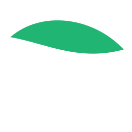
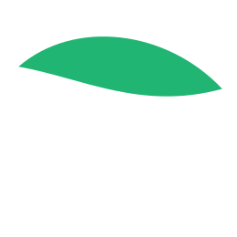

25:00
Organizador de tareas
Añade tus tareas, márcalas como hechas, edítalas, elimínalas o reordénalas arrastrando. Las tareas se guardan en tu navegador.
Añade tus tareas, márcalas como hechas, edítalas, elimínalas o reordénalas arrastrando. Las tareas se guardan en tu navegador.
 
